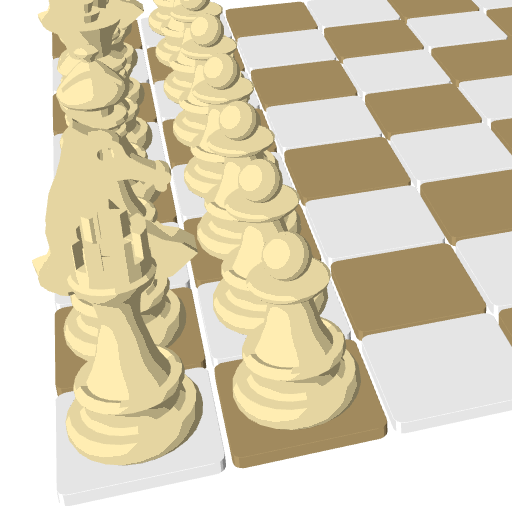
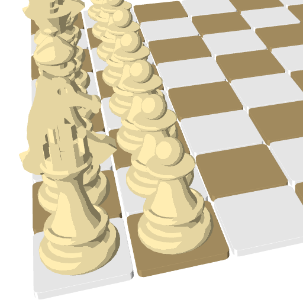

Install CMake, SFML and Stockfish:
sudo apt-get install cmake libsfml-dev stockfish
Download source code:
git clone https://github.com/martinRenou/ToonChess.git
cd ToonChess
Compile ToonChess:
mkdir build && cd build && cmake ..
make
There is already plenty of open-source chess games, so why would I develop my own one? I wanted to improve my knowledge of OpenGL and c++ programming. I am not even a chess gamer, I am just interested in real time 3D rendering. I also wanted to learn some tools like GoogleTest and Cppcheck. And here is the result, feel free to copy parts of the code for your own OpenGL projects.
I wanted a toon effect for my game, this effect can be performed using cel-shading technique. Instead of using "normal" enlightening, lights are computed using a threshold: if light intensity is more important than this threshold the mesh will be bright, dark otherwise. In fact in ToonChess shaders I used three thresholds, that is to say four levels of enlightening.
 

For the shadows I used the well-known Shadow Mapping technique. A separate render is performed using a Render To Texture technique, texture in which the distance from the light is saved for each mesh (See next picture, the nearest from the light the mesh is, the darkest it is in the shadowmap). And this distance from the light can be used in the main rendering process in order to know if the currently rendered part of the mesh is hidden from the light by an other object. See
this tutorial if you want to learn more about it. I then used the Percentage Close Filtering technique in order to make the shadows smoother (See this nvidia article about PCF).

Concerning mesh picking, I used a Color Picking technique. When a click event occurs, an other render is performed using a RTT technique, in which meshes are colored according to their positions on the grid (See next picture). The color on the clicked position of the screen is then extracted in order to know which piece on the grid has been selected. This technique is never used in video games, but it perfectly fits my needs for this project. Performance are ok because the RTT is performed only when a click event occurs.

Developing the IA would have been too much work, and it wasn't the purpose of this project. I chose to use Stockfish for that. Stockfish runs in a subprocess, and communicates with the GUI using the UCI protocol.
I created meshes on Blender and exported them under ".obj" file format.